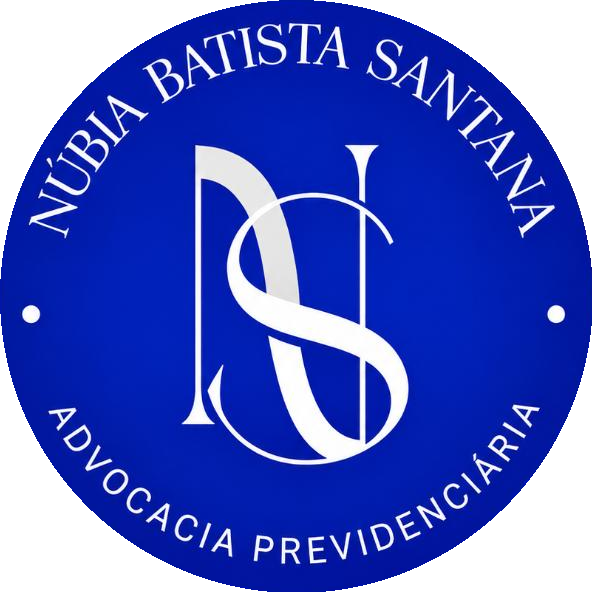

Aposentadorias, revisão de benefício, salário-maternidade e demais benefícios, com análise do seu caso antes de qualquer passo.
A NS Advocacia atende online e presencialmente em Ibirapitanga/BA: você fala direto com a Dra. Núbia Santana, especialista em Direito Previdenciário.
Pedir análise do meu benefícioPrimeira conversa pelo WhatsApp, sem compromisso.

"Muita gente recebe a negativa do INSS e desiste, ou aceita um valor menor do que tem direito, por não saber que pode recorrer e revisar."
Quem trabalhou a vida inteira não deveria travar numa fila ou numa carta de indeferimento. Negativa, valor errado e aposentadoria que nunca sai têm caminho: análise, recurso e revisão.
Com uma especialista em Direito Previdenciário, você descobre o que o INSS deixou passar e qual é o próximo passo certo para o seu caso.
Atendimento online e presencial, com explicação simples do começo ao fim.
Escolha o assunto e peça a análise do seu caso pelo WhatsApp:
Por idade, por tempo de contribuição e demais modalidades: análise do seu histórico para saber quando e como se aposentar com o melhor valor.
Pedir análise →Benefício com valor menor do que o devido pode ser revisado. A análise confere seu histórico de contribuições e aponta se há diferença a recuperar.
Pedir análise →Direito de mães seguradas, inclusive em situações que muita gente nem sabe que geram o benefício. Verifique o seu caso com uma análise completa.
Pedir análise →Recebeu uma negativa ou está esperando há meses? Análise do motivo e do caminho para recorrer, no INSS ou na Justiça.
Pedir análise →Para quem ainda vai se aposentar: projeção do melhor momento e do melhor valor, antes de dar entrada no pedido.
Pedir análise →Você conta o seu caso com as suas palavras. A primeira conversa é sem compromisso.
Suas contribuições e documentos são conferidos para apontar direitos, erros e prazos.
Você sabe exatamente o próximo passo: requerimento, recurso ou revisão, com acompanhamento próximo.
A Dra. Núbia Batista Santana comanda a NS Advocacia, dedicada ao Direito Previdenciário, com atendimento online e presencial em Ibirapitanga/BA.
A atuação cobre o que mais trava a vida de quem depende do INSS: aposentadorias, revisão de benefícios, salário-maternidade e benefícios negados ou parados.
"Meu trabalho é transformar a burocracia do INSS em um caminho claro para você."
Preencha ao lado e a conversa abre direto no WhatsApp da Dra. Núbia, com a mensagem já montada.
Na maioria dos casos, sim. A negativa pode ser contestada com recurso no próprio INSS ou na Justiça. O primeiro passo é analisar o motivo da negativa e os seus documentos.
Seguradas do INSS em diversas situações, incluindo trabalhadoras com carteira assinada, autônomas e até desempregadas dentro do período de graça. Cada caso pede uma conferência das contribuições.
Vale quando há erro no cálculo ou contribuição que ficou de fora do histórico. A análise compara o que você recebe com o que deveria receber e aponta se existe diferença a recuperar.
Pelo WhatsApp e por vídeo, com envio de documentos pelo celular. Você é atendido pela Dra. Núbia do começo ao fim, sem precisar se deslocar até Ibirapitanga.
Depende do tipo de pedido e da fila do INSS. Na análise, você recebe uma expectativa realista para o seu caso e sabe o que pode acelerar o processo.
Peça a análise do seu caso com a Dra. Núbia e descubra, com clareza, o que você pode receber e qual é o próximo passo.
Falar com a Dra. NúbiaResposta pessoal pelo WhatsApp · Online e presencial em Ibirapitanga/BA